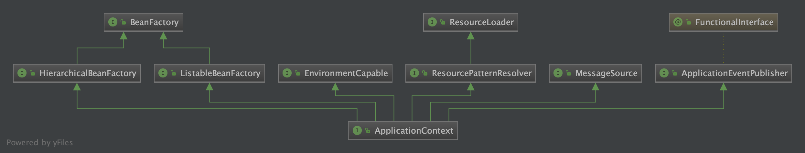

BeanFactory & ApplicationContext
BeanFactory
负责配置、创建、管理Bean；IOC功能的实现主要就依赖于该接口子类实现；详见对beanFactory的介绍
BeanFactoryPostProcessor的理解?
BeanFactoryPostProcessor是Spring中提供的一个扩展点
Spring源码中ConfigurationClassPostProcessor，它就是一个BeanFactory的后置处理器，它负责解析配置类，完成扫描，把扫描得到的BeanDefinition注册到BeanFactory中
ApplicationContext & BeanFactory 的区别和联系

- ApplicationContext和BeanFactory一样都是bean容器
BeanFactory是一切Bean容器的父类，是最顶层interface
ApplicationContext继承了BeanFactory，ApplicationContext包含了BeanFactory的所有功能，并且扩展了其它功能
- 国际化（MessageSource）
- 访问资源，如URL和文件（ResourceLoader）
- 载入多个（有继承关系）上下文 ，使得每一个上下文都专注于一个特定的层次，比如应用的web层
- 消息发送、响应机制（ApplicationEventPublisher）
- AOP（拦截器）
ApplicationContext除了bean的管理配置相关的能力，ApplicationContext还拥有了Environment（环境）、MessageSource（国际化）、ResourceLoader（资源）、ApplicationEventPublisher（应用事件）等服务相关的接口，简单的说ApplicationContext是以bean管理为基础的综合能力扩展，用于满足业务对Spring综合能力的需要；
附：国际化是什么？
应用程序运行时，可根据客户端操作系統的国家/地区、语言的不同而显示不同的界面，比如客户端OS的语言环境为大陆的简体中文，程序就显示为简体中文，客户端OS的语言环境为美国——英语，程序就显示美式英语。OS的语言环境可在控制面板中手动设置。国际化的英文单词是Internationalization，单词较长，通常简称i18n，I是第一个字母，18表示中间省略了18个字母，N是最后一个字母。
假设我们正在开发一个支持多国语言的Web应用程序，要求系统能够根据客户端的系统的语言类型返回对应的界面：英文的操作系统返回英文界面，而中文的操作系统则返回中文界面——这便是典型的i18n国际化问题。对于有国际化要求的应用系统，我们不能简单地采用硬编码的方式编写用户界面信息、报错信息等内容，而必须为这些需要国际化的信息进行特殊处理。简单来说，就是为每种语言提供一套相应的资源文件，并以规范化命名的方式保存在特定的目录中，由系统自动根据客户端语言选择适合的资源文件。
ClassPathXmlApplicationContext举例
- 解析配置的xml信息，将xml路径信息赋值给configLocations，设置了配置信息之后对ApplicationContext进行初始化操作（refresh方法）
public ClassPathXmlApplicationContext(
String[] configLocations, boolean refresh, @Nullable ApplicationContext parent)
throws BeansException {
//调用父类的构造函数
super(parent);
//设置配置xml
setConfigLocations(configLocations);
//ApplicationContext初始化
if (refresh) {
refresh();
}
}
- refresh的12个方法
@Override
public void refresh() throws BeansException, IllegalStateException {
synchronized (this.startupShutdownMonitor) {
// Prepare this context for refreshing.
// 准备工作，记录下容器的启动时间、标记“已启动”状态、处理配置文件中的占位符
prepareRefresh();
// Tell the subclass to refresh the internal bean factory.
// 获取BeanFactory；默认实现是DefaultListableBeanFactory，在创建容器的时候创建的
ConfigurableListableBeanFactory beanFactory = obtainFreshBeanFactory();
// Prepare the bean factory for use in this context.
//对BeanFactory进行各种功能扩展
prepareBeanFactory(beanFactory);
try {
// Allows post-processing of the bean factory in context subclasses.
//子类覆盖方法做额外的处理
postProcessBeanFactory(beanFactory);
// Invoke factory processors registered as beans in the context.
// 激活各种BeanFactory处理器
// 会处理@PropertySources，@ComponentScan，@Import等注解
invokeBeanFactoryPostProcessors(beanFactory);
// Register bean processors that intercept bean creation.
//注册拦截Bean创建对Bean处理器，这里只是注册，真正调用是在getBean对时候
registerBeanPostProcessors(beanFactory);
// Initialize message source for this context.
//为上下文初始化Message
initMessageSource();
// Initialize event multicaster for this context.
//初始化应用消息广播器
initApplicationEventMulticaster();
// Initialize other special beans in specific context subclasses.
//留给子类来初始化其它的Bean
onRefresh();
// Check for listener beans and register them.
//在所有注册对bean中寻找Listener bean，注册到消息广播器中
registerListeners();
// Instantiate all remaining (non-lazy-init) singletons.
//初始化单例bean
finishBeanFactoryInitialization(beanFactory);
// Last step: publish corresponding event.
//完成刷新过程，通知生命周期处理器刷新过程，同时发出ContextRefreshEvent通知别人
finishRefresh();
}
catch (BeansException ex) {
if (logger.isWarnEnabled()) {
logger.warn("Exception encountered during context initialization - " +
"cancelling refresh attempt: " + ex);
}
// Destroy already created singletons to avoid dangling resources.
destroyBeans();
// Reset 'active' flag.
cancelRefresh(ex);
// Propagate exception to caller.
throw ex;
}
finally {
// Reset common introspection caches in Spring's core, since we
// might not ever need metadata for singleton beans anymore...
resetCommonCaches();
}
}
}